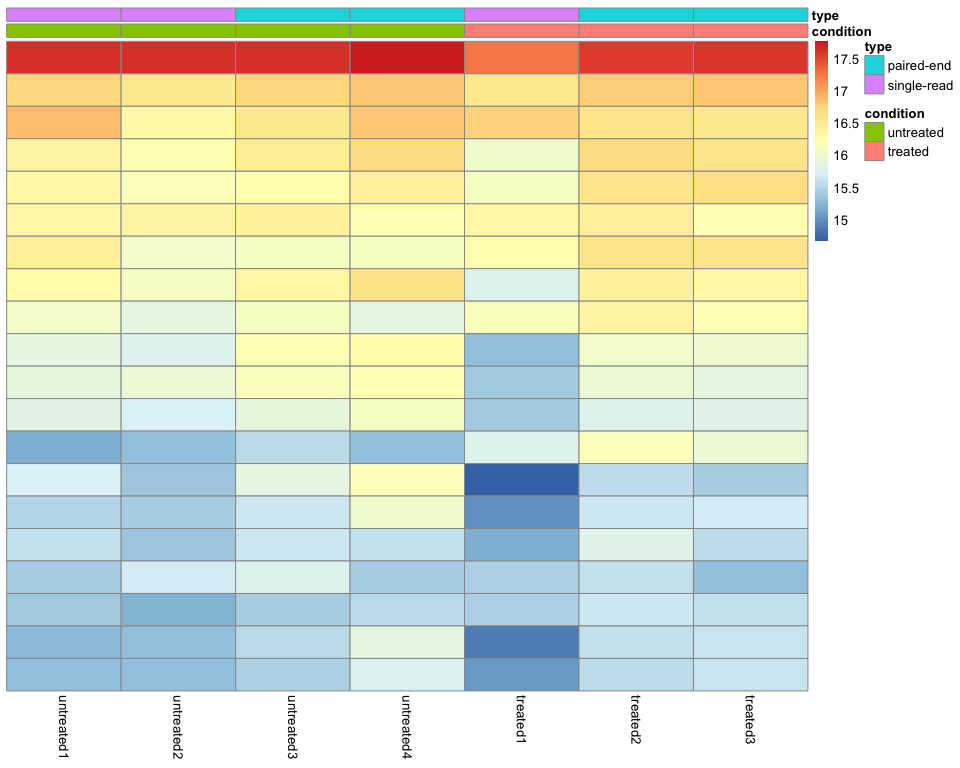

Differential expression analysis
In order to test for differential expression, we operate on raw counts and use discrete distributions After checking that our samples are well correlated within conditions, we can proceed to test for Differantially Expressed Genes using the results() function.
res <- results(dds)
head(data.frame(res))
## baseMean log2FoldChange lfcSE stat pvalue
## FBgn0000008 95.144292 0.002276441 0.2237287 0.01017501 0.99188166
## FBgn0000014 1.056523 -0.495120386 2.1431858 -0.23102075 0.81729868
## FBgn0000017 4352.553569 -0.239918944 0.1263369 -1.89904085 0.05755911
## FBgn0000018 418.610484 -0.104673912 0.1484891 -0.70492676 0.48085582
## FBgn0000024 6.406200 0.210847792 0.6895876 0.30575928 0.75978794
## FBgn0000032 989.720217 -0.091788071 0.1477518 -0.62123130 0.53444745
## padj
## FBgn0000008 0.9972108
## FBgn0000014 NA
## FBgn0000017 0.2880017
## FBgn0000018 0.8268337
## FBgn0000024 0.9435011
## FBgn0000032 0.8542018
Information about the results columns can be retrieved using the following snippet:
mcols(res)$description
## [1] "mean of normalized counts for all samples"
## [2] "log2 fold change (MLE): condition treated vs untreated"
## [3] "standard error: condition treated vs untreated"
## [4] "Wald statistic: condition treated vs untreated"
## [5] "Wald test p-value: condition treated vs untreated"
## [6] "BH adjusted p-values"
In this example, we only have two conditions: “untreated” and “treated”, so there is no need to specify which comparison we would like to make. If your experiment contains more than two conditions, there are different ways of specifying which comparison you would like to make.
First, the “contrast” argument will take a vector that specifies the metadata and the order of the comparison. In this case, you can swap the order of the condition levels.
res <- results(dds, contrast=c("condition","untreated","treated"))
head(data.frame(res))
## baseMean log2FoldChange lfcSE stat pvalue
## FBgn0000008 95.144292 -0.002276441 0.2237287 -0.01017501 0.99188166
## FBgn0000014 1.056523 0.495120386 2.1431858 0.23102075 0.81729868
## FBgn0000017 4352.553569 0.239918944 0.1263369 1.89904085 0.05755911
## FBgn0000018 418.610484 0.104673912 0.1484891 0.70492676 0.48085582
## FBgn0000024 6.406200 -0.210847792 0.6895876 -0.30575928 0.75978794
## FBgn0000032 989.720217 0.091788071 0.1477518 0.62123130 0.53444745
## padj
## FBgn0000008 0.9972108
## FBgn0000014 NA
## FBgn0000017 0.2880017
## FBgn0000018 0.8268337
## FBgn0000024 0.9435011
## FBgn0000032 0.8542018
Second, “name” argument will use the results of the resultsNames() function. This function creates possible combinations of conditions, but always using the reference condition for the comparison.
resultsNames(dds)
## [1] "Intercept" "condition_treated_vs_untreated"
res <- results(dds, name="condition_treated_vs_untreated")
head(data.frame(res))
## baseMean log2FoldChange lfcSE stat pvalue
## FBgn0000008 95.144292 0.002276441 0.2237287 0.01017501 0.99188166
## FBgn0000014 1.056523 -0.495120386 2.1431858 -0.23102075 0.81729868
## FBgn0000017 4352.553569 -0.239918944 0.1263369 -1.89904085 0.05755911
## FBgn0000018 418.610484 -0.104673912 0.1484891 -0.70492676 0.48085582
## FBgn0000024 6.406200 0.210847792 0.6895876 0.30575928 0.75978794
## FBgn0000032 989.720217 -0.091788071 0.1477518 -0.62123130 0.53444745
## padj
## FBgn0000008 0.9972108
## FBgn0000014 NA
## FBgn0000017 0.2880017
## FBgn0000018 0.8268337
## FBgn0000024 0.9435011
## FBgn0000032 0.8542018
The notebook contrast_design.Rmd contains information about how to understand and define contrasts using model matrices, which might be a more intuitive way of comparing samples or conditions.
Extracting results
The output of the res() function is the one you want to use/save to identify differentially expressed genes using log2 Fold Change or adjusted p-value thresholds.
There is a chance that the adjusted p-value is NA. If you will work on this results, it might be helpful to change all NA to an adjusted p-value of 1.
res$padj[is.na(res$padj)] <- 1
We can have a quick look of the adjusted p-value results by using the following custom function:
results_summary <- function(x, alpha = 0.05, LFC = 1) {
ngenes <- nrow(x)
signif <- sum(x$padj < alpha, na.rm = T)
up <- sum(x$padj < alpha & x$log2FoldChange > LFC, na.rm = T)
down <- sum(x$padj < alpha & x$log2FoldChange < -LFC, na.rm = T)
results <- c(paste0("Number of genes: ", ngenes),
paste0("Number of genes with adjusted p-value < ",alpha,": ", signif, " (", round((signif/ngenes)*100,digits = 2),"%)"),
" Of those:",
paste0(" with LFC < ", -LFC, ": ", down, " (", round((down/ngenes)*100,digits = 2),"%)"),
paste0(" with LFC > ", LFC, ": ", up, " (", round((up/ngenes)*100,digits = 2),"%)"))
writeLines(paste(results, collapse = "\n"))
return(paste(results, collapse = "\n"))
}
res_summary <- results_summary(res, alpha = 0.05, LFC = 1)
## Number of genes: 9921
## Number of genes with adjusted p-value < 0.05: 841 (8.48%)
## Of those:
## with LFC < -1: 107 (1.08%)
## with LFC > 1: 115 (1.16%)
Save significant results
Extracting results based on adjusted p-value and LFC. this way we will get a filteres table with genes with LFC > 1 or LFC < -1 with an adjusted p-value of 0.05
LFC <- 1
adj_pvalue <- 0.05
sig_res <- res[res$padj < adj_pvalue & abs(res$log2FoldChange) > LFC,]
#write.table(x = sig_res, "./significant_results.tsv", quote = F, col.names = T, row.names = T, sep = "\t")
DEA visualizations
Count matrix heatmaps
We can visualize different heatmaps depending on what we are interested on. We can see the top most expressed genes, the top most variable genes and the DE genes.
Top most variable genes
ntop <- 20
select <- order(rowSds(counts(dds,normalized=TRUE)),
decreasing=TRUE)[1:ntop]
df <- as.data.frame(colData(dds)[,c("condition","type")])
pheatmap(assay(vsd)[select,], cluster_rows=T, show_rownames=FALSE, scale = "row",
cluster_cols=FALSE, annotation_col=df)

Top expressed genes
ntop <- 20
select <- order(rowMeans(counts(dds,normalized=TRUE)),
decreasing=TRUE)[1:ntop]
df <- as.data.frame(colData(dds)[,c("condition","type")])
pheatmap(assay(vsd)[select,], cluster_rows=FALSE, show_rownames=FALSE,
cluster_cols=FALSE, annotation_col=df)

Differentially expressed genes
select <- rownames(sig_res)
df <- as.data.frame(colData(dds)[,c("condition","type")])
pheatmap(assay(vsd)[rownames(vsd) %in% select,], cluster_rows=TRUE, show_rownames=FALSE, scale = "row",
cluster_cols=FALSE, annotation_col=df)

Fold change plots
For fold change plots, it is useful to shrunk log2 fold changes, which removes the noise associated with log2 fold changes from low count genes without requiring arbitrary filtering thresholds.
resLFC <- lfcShrink(dds, coef="condition_treated_vs_untreated", type="apeglm")
resLFC$padj[is.na(resLFC$padj)] <- 1
MA plot
alpha <- 0.05
ggplot(data.frame(resLFC)) + theme_bw() +
labs(title = "MA plot", subtitle = res_summary,
color = paste0("Adjusted p-value < ",alpha)) +
geom_point(aes(x = log10(baseMean), y = log2FoldChange,
color = factor((padj < alpha), levels = c("TRUE","FALSE"))), size = 1)

Volcano plot
alpha = 0.05
LFC = 1
ggplot(data.frame(resLFC)) + theme_bw() +
labs(color ="Significant genes", title = "Volcano plot", subtitle = res_summary) +
geom_hline(yintercept = -log10(alpha), linetype = "dashed") +
geom_vline(xintercept = c(-LFC,LFC), linetype = "dashed") +
geom_point(aes(x = log2FoldChange, y = -log10(padj),
color = factor((padj < alpha & abs(log2FoldChange) > LFC), levels = c("TRUE","FALSE"))), size = 1)

Glimma plots
We can visualize our results interactively using the glimmaMA() and
glimmaVolcano() functions.
glimma_MA <- glimmaMA(dds, groups = dds$condition)
glimma_Volcano <- glimmaVolcano(dds, groups = dds$condition)
Save your interactive plots using the htmlwidgets::saveWidget()
function.
htmlwidgets::saveWidget(glimmaMA(dds, groups = dds$condition), "ma-plot.html")
htmlwidgets::saveWidget(glimmaVolcano(dds, groups = dds$condition), "volcano-plot.html")
Session info
Finally, we create a session_info() table that will allow anyone to
check what versions of R and packages are we using for reproducibility
purposes.
devtools::session_info()
## ─ Session info ───────────────────────────────────────────────────────────────
## setting value
## version R version 4.1.0 (2021-05-18)
## os macOS Big Sur 10.16
## system x86_64, darwin17.0
## ui X11
## language (EN)
## collate en_US.UTF-8
## ctype en_US.UTF-8
## tz Europe/Copenhagen
## date 2022-02-25
## pandoc 2.14.0.1 @ /usr/local/bin/ (via rmarkdown)
##
## ─ Packages ───────────────────────────────────────────────────────────────────
## package * version date (UTC) lib source
## annotate 1.72.0 2021-10-26 [1] Bioconductor
## AnnotationDbi 1.56.2 2021-11-09 [1] Bioconductor
## apeglm 1.16.0 2021-10-26 [1] Bioconductor
## assertthat 0.2.1 2019-03-21 [1] CRAN (R 4.1.0)
## backports 1.4.1 2021-12-13 [1] CRAN (R 4.1.0)
## bbmle 1.0.24 2021-08-05 [1] CRAN (R 4.1.0)
## bdsmatrix 1.3-4 2020-01-13 [1] CRAN (R 4.1.0)
## Biobase * 2.54.0 2021-10-26 [1] Bioconductor
## BiocGenerics * 0.40.0 2021-10-26 [1] Bioconductor
## BiocParallel 1.28.3 2021-12-09 [1] Bioconductor
## Biostrings 2.62.0 2021-10-26 [1] Bioconductor
## bit 4.0.4 2020-08-04 [1] CRAN (R 4.1.0)
## bit64 4.0.5 2020-08-30 [1] CRAN (R 4.1.0)
## bitops 1.0-7 2021-04-24 [1] CRAN (R 4.1.0)
## blob 1.2.2 2021-07-23 [1] CRAN (R 4.1.0)
## broom 0.7.10 2021-10-31 [1] CRAN (R 4.1.0)
## cachem 1.0.6 2021-08-19 [1] CRAN (R 4.1.0)
## callr 3.7.0 2021-04-20 [1] CRAN (R 4.1.0)
## cellranger 1.1.0 2016-07-27 [1] CRAN (R 4.1.0)
## cli 3.1.0 2021-10-27 [1] CRAN (R 4.1.0)
## coda 0.19-4 2020-09-30 [1] CRAN (R 4.1.0)
## colorspace 2.0-2 2021-06-24 [1] CRAN (R 4.1.0)
## crayon 1.4.2 2021-10-29 [1] CRAN (R 4.1.0)
## data.table 1.14.2 2021-09-27 [1] CRAN (R 4.1.0)
## DBI 1.1.1 2021-01-15 [1] CRAN (R 4.1.0)
## dbplyr 2.1.1 2021-04-06 [1] CRAN (R 4.1.0)
## DelayedArray 0.20.0 2021-10-26 [1] Bioconductor
## desc 1.4.0 2021-09-28 [1] CRAN (R 4.1.0)
## DESeq2 * 1.34.0 2021-10-26 [1] Bioconductor
## devtools 2.4.3 2021-11-30 [1] CRAN (R 4.1.0)
## digest 0.6.29 2021-12-01 [1] CRAN (R 4.1.0)
## dplyr * 1.0.7 2021-06-18 [1] CRAN (R 4.1.0)
## edgeR 3.36.0 2021-10-26 [1] Bioconductor
## ellipsis 0.3.2 2021-04-29 [1] CRAN (R 4.1.0)
## emdbook 1.3.12 2020-02-19 [1] CRAN (R 4.1.0)
## evaluate 0.14 2019-05-28 [1] CRAN (R 4.1.0)
## fansi 0.5.0 2021-05-25 [1] CRAN (R 4.1.0)
## farver 2.1.0 2021-02-28 [1] CRAN (R 4.1.0)
## fastmap 1.1.0 2021-01-25 [1] CRAN (R 4.1.0)
## forcats * 0.5.1 2021-01-27 [1] CRAN (R 4.1.0)
## fs 1.5.2 2021-12-08 [1] CRAN (R 4.1.0)
## genefilter 1.76.0 2021-10-26 [1] Bioconductor
## geneplotter 1.72.0 2021-10-26 [1] Bioconductor
## generics 0.1.1 2021-10-25 [1] CRAN (R 4.1.0)
## GenomeInfoDb * 1.30.0 2021-10-26 [1] Bioconductor
## GenomeInfoDbData 1.2.7 2021-11-16 [1] Bioconductor
## GenomicRanges * 1.46.1 2021-11-18 [1] Bioconductor
## ggplot2 * 3.3.5 2021-06-25 [1] CRAN (R 4.1.0)
## Glimma * 2.4.0 2021-10-26 [1] Bioconductor
## glue 1.5.1 2021-11-30 [1] CRAN (R 4.1.0)
## gprofiler2 * 0.2.1 2021-08-23 [1] CRAN (R 4.1.0)
## gtable 0.3.0 2019-03-25 [1] CRAN (R 4.1.0)
## haven 2.4.3 2021-08-04 [1] CRAN (R 4.1.0)
## highr 0.9 2021-04-16 [1] CRAN (R 4.1.0)
## hms 1.1.1 2021-09-26 [1] CRAN (R 4.1.0)
## htmltools 0.5.2 2021-08-25 [1] CRAN (R 4.1.0)
## htmlwidgets 1.5.4 2021-09-08 [1] CRAN (R 4.1.0)
## httr 1.4.2 2020-07-20 [1] CRAN (R 4.1.0)
## IRanges * 2.28.0 2021-10-26 [1] Bioconductor
## jsonlite 1.7.2 2020-12-09 [1] CRAN (R 4.1.0)
## KEGGREST 1.34.0 2021-10-26 [1] Bioconductor
## knitr 1.36 2021-09-29 [1] CRAN (R 4.1.0)
## labeling 0.4.2 2020-10-20 [1] CRAN (R 4.1.0)
## lattice 0.20-45 2021-09-22 [1] CRAN (R 4.1.0)
## lazyeval 0.2.2 2019-03-15 [1] CRAN (R 4.1.0)
## lifecycle 1.0.1 2021-09-24 [1] CRAN (R 4.1.0)
## limma 3.50.0 2021-10-26 [1] Bioconductor
## locfit 1.5-9.4 2020-03-25 [1] CRAN (R 4.1.0)
## lubridate 1.8.0 2021-10-07 [1] CRAN (R 4.1.0)
## magrittr 2.0.1 2020-11-17 [1] CRAN (R 4.1.0)
## MASS 7.3-54 2021-05-03 [1] CRAN (R 4.1.0)
## Matrix 1.4-0 2021-12-08 [1] CRAN (R 4.1.0)
## MatrixGenerics * 1.6.0 2021-10-26 [1] Bioconductor
## matrixStats * 0.61.0 2021-09-17 [1] CRAN (R 4.1.0)
## memoise 2.0.1 2021-11-26 [1] CRAN (R 4.1.0)
## modelr 0.1.8 2020-05-19 [1] CRAN (R 4.1.0)
## munsell 0.5.0 2018-06-12 [1] CRAN (R 4.1.0)
## mvtnorm 1.1-3 2021-10-08 [1] CRAN (R 4.1.0)
## numDeriv 2016.8-1.1 2019-06-06 [1] CRAN (R 4.1.0)
## pheatmap * 1.0.12 2019-01-04 [1] CRAN (R 4.1.0)
## pillar 1.6.4 2021-10-18 [1] CRAN (R 4.1.0)
## pkgbuild 1.3.0 2021-12-09 [1] CRAN (R 4.1.0)
## pkgconfig 2.0.3 2019-09-22 [1] CRAN (R 4.1.0)
## pkgload 1.2.4 2021-11-30 [1] CRAN (R 4.1.0)
## plotly 4.10.0 2021-10-09 [1] CRAN (R 4.1.0)
## plyr 1.8.6 2020-03-03 [1] CRAN (R 4.1.0)
## png 0.1-7 2013-12-03 [1] CRAN (R 4.1.0)
## prettyunits 1.1.1 2020-01-24 [1] CRAN (R 4.1.0)
## processx 3.5.2 2021-04-30 [1] CRAN (R 4.1.0)
## ps 1.6.0 2021-02-28 [1] CRAN (R 4.1.0)
## purrr * 0.3.4 2020-04-17 [1] CRAN (R 4.1.0)
## R6 2.5.1 2021-08-19 [1] CRAN (R 4.1.0)
## RColorBrewer * 1.1-2 2014-12-07 [1] CRAN (R 4.1.0)
## Rcpp 1.0.7 2021-07-07 [1] CRAN (R 4.1.0)
## RCurl 1.98-1.5 2021-09-17 [1] CRAN (R 4.1.0)
## readr * 2.1.1 2021-11-30 [1] CRAN (R 4.1.0)
## readxl 1.3.1 2019-03-13 [1] CRAN (R 4.1.0)
## remotes 2.4.2 2021-11-30 [1] CRAN (R 4.1.0)
## reprex 2.0.1 2021-08-05 [1] CRAN (R 4.1.0)
## rlang 0.4.12 2021-10-18 [1] CRAN (R 4.1.0)
## rmarkdown 2.11 2021-09-14 [1] CRAN (R 4.1.0)
## rprojroot 2.0.2 2020-11-15 [1] CRAN (R 4.1.0)
## RSQLite 2.2.9 2021-12-06 [1] CRAN (R 4.1.0)
## rstudioapi 0.13 2020-11-12 [1] CRAN (R 4.1.0)
## rvest 1.0.2 2021-10-16 [1] CRAN (R 4.1.0)
## S4Vectors * 0.32.3 2021-11-21 [1] Bioconductor
## scales 1.1.1 2020-05-11 [1] CRAN (R 4.1.0)
## sessioninfo 1.2.2 2021-12-06 [1] CRAN (R 4.1.0)
## stringi 1.7.6 2021-11-29 [1] CRAN (R 4.1.0)
## stringr * 1.4.0 2019-02-10 [1] CRAN (R 4.1.0)
## SummarizedExperiment * 1.24.0 2021-10-26 [1] Bioconductor
## survival 3.2-13 2021-08-24 [1] CRAN (R 4.1.0)
## testthat 3.1.1 2021-12-03 [1] CRAN (R 4.1.0)
## tibble * 3.1.6 2021-11-07 [1] CRAN (R 4.1.0)
## tidyr * 1.1.4 2021-09-27 [1] CRAN (R 4.1.0)
## tidyselect 1.1.1 2021-04-30 [1] CRAN (R 4.1.0)
## tidyverse * 1.3.1 2021-04-15 [1] CRAN (R 4.1.0)
## tzdb 0.2.0 2021-10-27 [1] CRAN (R 4.1.0)
## usethis 2.1.5 2021-12-09 [1] CRAN (R 4.1.0)
## utf8 1.2.2 2021-07-24 [1] CRAN (R 4.1.0)
## vctrs 0.3.8 2021-04-29 [1] CRAN (R 4.1.0)
## viridisLite 0.4.0 2021-04-13 [1] CRAN (R 4.1.0)
## withr 2.4.3 2021-11-30 [1] CRAN (R 4.1.0)
## xfun 0.28 2021-11-04 [1] CRAN (R 4.1.0)
## XML 3.99-0.8 2021-09-17 [1] CRAN (R 4.1.0)
## xml2 1.3.3 2021-11-30 [1] CRAN (R 4.1.0)
## xtable 1.8-4 2019-04-21 [1] CRAN (R 4.1.0)
## XVector 0.34.0 2021-10-26 [1] Bioconductor
## yaml 2.2.1 2020-02-01 [1] CRAN (R 4.1.0)
## zlibbioc 1.40.0 2021-10-26 [1] Bioconductor
##
## [1] /Library/Frameworks/R.framework/Versions/4.1/Resources/library
##
## ──────────────────────────────────────────────────────────────────────────────